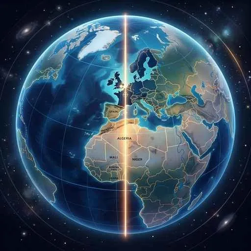
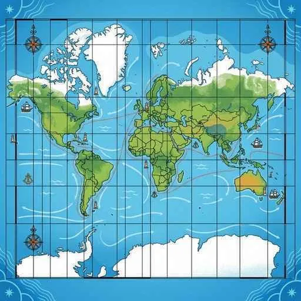

1. 地球の姿と人々の暮らし
私たちが暮らす地球には、広大な海と大陸が広がり、場所によって多様な気候や文化が存在しています。今回は、地球の基本的なすがた（陸地と海、緯度・経度、時差、地図の図法）と、世界各地の気候や環境に適応した人々のユニークな暮らしの知恵を徹底解説します！
1. 地球の姿（陸地と海洋、大陸と州）
地球の表面積は約5.1億平方キロメートルですが、そのうち陸地と海洋の割合はおよそ「3：7」（陸地が約29％、海洋が約71％）です。圧倒的に海の面積の方が広いのです。
図1：宇宙から見た地球。陸地と海洋の割合は「3：7」です
① 六大洋と六大陸
世界には、非常に広い3つの海である「三大洋（太平洋、大西洋、インド洋）」があります（※三大洋に北極海は含まれません）。また、地球上には6つの大きな大陸が存在します。
- ユーラシア大陸：世界で最も面積が大きい大陸。
- オーストラリア大陸：世界で最も小さい大陸。
- その他の大陸：アフリカ大陸、北アメリカ大陸、南アメリカ大陸、南極大陸。
なお、南極大陸は環境保全や平和的利用のために定められた南極条約により、各国の領土主張や軍事利用、観測基地での特定の活動制限など厳格なルールが敷かれています。
② 世界を分ける6つの「州（エリア）」
世界の国々は、地理的なまとまりで6つの「州」に区分されます。日本が含まれるのはアジア州です。他には、ヨーロッパ州（アジアと地続きで合わせて「ユーラシア」とも呼ばれます）、アフリカ州、北アメリカ州、南アメリカ州、そしてオーストラリアや太平洋の島々からなるオセアニア州があります。
2. 緯度・経度と時差
地球上の位置を表すために、縦と横の線が引かれています。地図や地球儀で縦に引かれた線を「経線（けいせん）」、横に引かれた線を「緯線（いせん）」と呼びます。

図2：ロンドンの旧グリニッジ天文台を通る「本初子午線（経度0度）」
- 赤道（せきどう）：緯度0度の線。地球のほぼ中央を横切っています。
- 本初子午線（ほんしょしごせん）：経度0度の基準線。イギリスの首都ロンドンを通っています。
- 日付変更線：経度180度の線のほぼ上を通る、日付を調整するための基準線です。
- 対蹠点（たいせきてん）：地球の中心を通って、ちょうど反対側に位置する地点のことです。日本の反対側（対蹠点）は、南アメリカ大陸の東方海上に位置します。
① 時差の仕組みと計算方法
地球は24時間かけて1回転（360度）自転するため、経度が15度ずれるごとに1時間の時差が生まれます。 各国はそれぞれ基準となる経線（標準時子午線）を決めています。日本の標準時子午線は東経135度（兵庫県明石市を通る）です。
3. さまざまな地図の図法
球体である地球を平らな紙に描くとき、どうしても「距離」「面積」「角度」「方位」のすべてを同時に正しく表すことはできません。用途に合わせて様々な図法が使われます。

図3：角度が正しく、目的地への進路が直線で表せる「メルカトル図法」
- メルカトル図法（角度が正しい）：緯線と経線が直交し、目的地への角度が正しく表せるため、主に航海図として使われます。高緯度ほど面積が拡大されて歪む特徴があります。
- モルワイデ図法（面積が正しい）：地球全体の面積の割合が正しく表されるため、世界の人口分布や気候区分などの分布図に適しています。
- 正距方位図法（距離と方位が正しい）：図の中心からの「距離」と「方位」が正しく表されます。航空ルート（航空図）などに用いられます。
4. 世界の気候帯と人々の暮らしの知恵
世界は、赤道に近い地域から極地にかけて、大きく5つの気候帯に分けられます。人々はそれぞれの自然環境に適応した住居や衣服の工夫をして暮らしています。
図4：東南アジアなど熱帯地方で見られる、通気性が良く浸水を防ぐ「高床式住居」
- 熱帯（ねったい）：一年中気温が高く雨が多い。熱帯雨林地方では、午後に激しい雨（スコール）が降ります。雨季と乾季がはっきり分かれ、背の高い草が広がる地域はサバナ気候と呼ばれます。住居は、風通しが良く地面からの湿気や虫、浸水を防ぐ高床式住居が特徴です。
- 乾燥帯（かんそうたい）：雨が極端に少なく、樹木が育ちません。オアシスの水を利用するオアシス農業が行われ、モンゴルなどの遊牧民は組み立て式の移動式住居「ゲル」を使います。住居は、日差しの熱を遮るために窓を小さくした日干しレンガの家が多く見られます。
- 温帯（おんたい）：四季の変化がはっきりしており、日本もこれに属します。西ヨーロッパでは暖流（北大西洋海流）と偏西風のおかげで高緯度のわりには冬でも温かい西岸海洋性気候が、地中海沿岸では夏に乾燥し冬に雨が降る地中海性気候が見られます。
- 冷帯（亜寒帯）：夏は短いですが、冬の寒さが非常に厳しい。北部に「タイガ」と呼ばれる針葉樹林が広がります。シベリアの永久凍土地帯では、暖房の熱で地盤が溶けて家が傾くのを防ぐために、家を少し浮かせる高床式の工夫が施されます。カナダのイヌイットなどは、かつて雪を固めて作った「イグルー」を冬の仮住まいにしていました。
- 寒帯（かんたい）：一年中極めて寒く、樹木は育ちません。短い夏の間だけ地表の雪が溶け、苔（コケ）類が育つ気候をツンドラ気候と呼びます。
5. 宗教と衣服・世界の国々
世界の文化や社会、住まい・食事などは、歴史的な背景や宗教とも密接に結びついています。
- 世界の三大宗教：信者数が最も多いキリスト教、アジアや中東で広く信仰されるイスラム教、インドを中心に信仰される仏教があります。
- 食事のルール（禁忌）：イスラム教徒は豚肉を食べず、ヒンドゥー教徒は牛肉を食べることを避けます。
- 民族衣装：インドの女性が身につける長い布を巻いた「サリー」や、南米アンデス高地（アルパカ・リャマなどの飼育が盛ん）で先住民が着用するマント状の「ポンチョ」があります。
- 社会と協力：現代の世界は、多様な文化や民族が互いに尊重し合って暮らす「多文化社会」を目指しています。また、東南アジアの国々はASEAN（東南アジア諸国連合）、ヨーロッパの国々はEU（ヨーロッパ連合）などの国際組織を作り、強力に経済・政治的な結びつきを強めています。
🔥 定期テスト対策・暗記のコツ
① 時差の計算
「時差 ＝ 経度の差 ÷ 15」で計算します！東経と西経をまたぐ場合は「経度を足す」、同じ東経どうし・西経どうしの場合は「経度を引く」のがポイントです！
例：日本（東経135度）とロンドン（経度0度）の時差は、(135 - 0) ÷ 15 ＝ 9時間。日本の方が東にあるため、ロンドンより9時間進んでいます。（ロンドンが昼の12時なら、日本は午後9時になります）
② 地図の図法と用途
テストでは「航海図＝メルカトル」「分布図（面積正）＝モルワイデ」「航空図（距離・方位正）＝正距方位」という組み合わせが記述や選択問題で非常によく出題されます！
③ 気候帯と住居
「熱帯＝高床式（風通し・湿気対策）」「乾燥帯＝日干しレンガで窓が小さい（熱を遮る・砂風対策）」「冷帯シベリア＝高床式（永久凍土保護）」をそれぞれの理由とセットで記述できるようにしておきましょう！